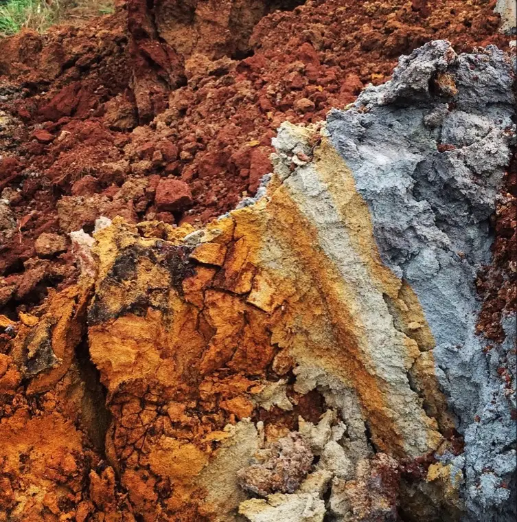
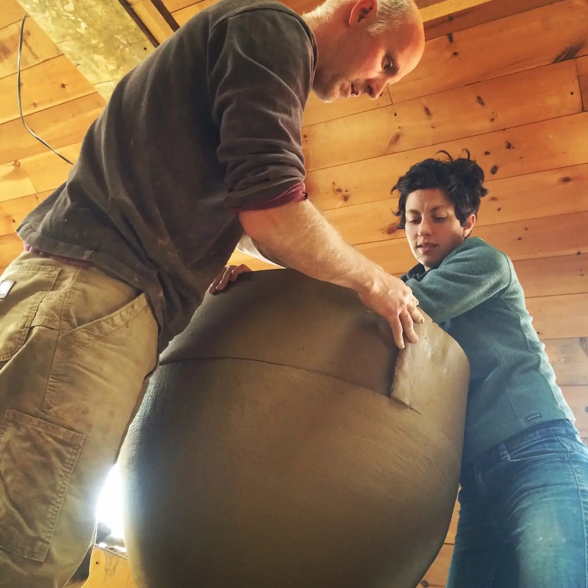
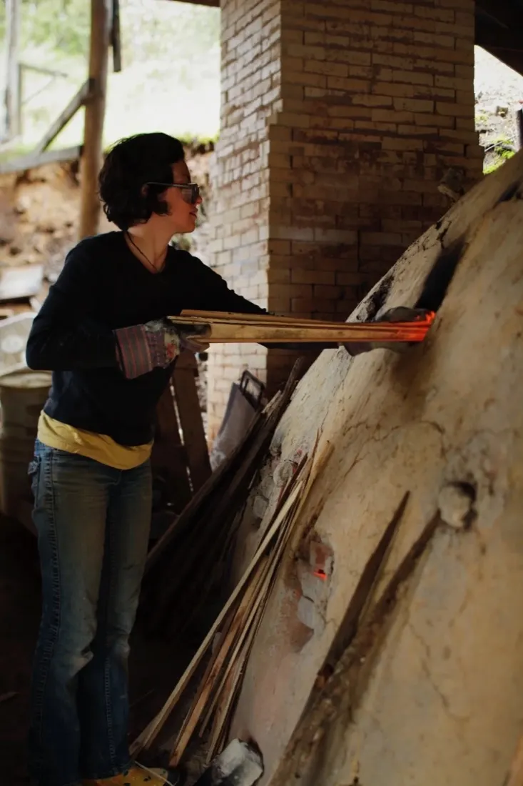
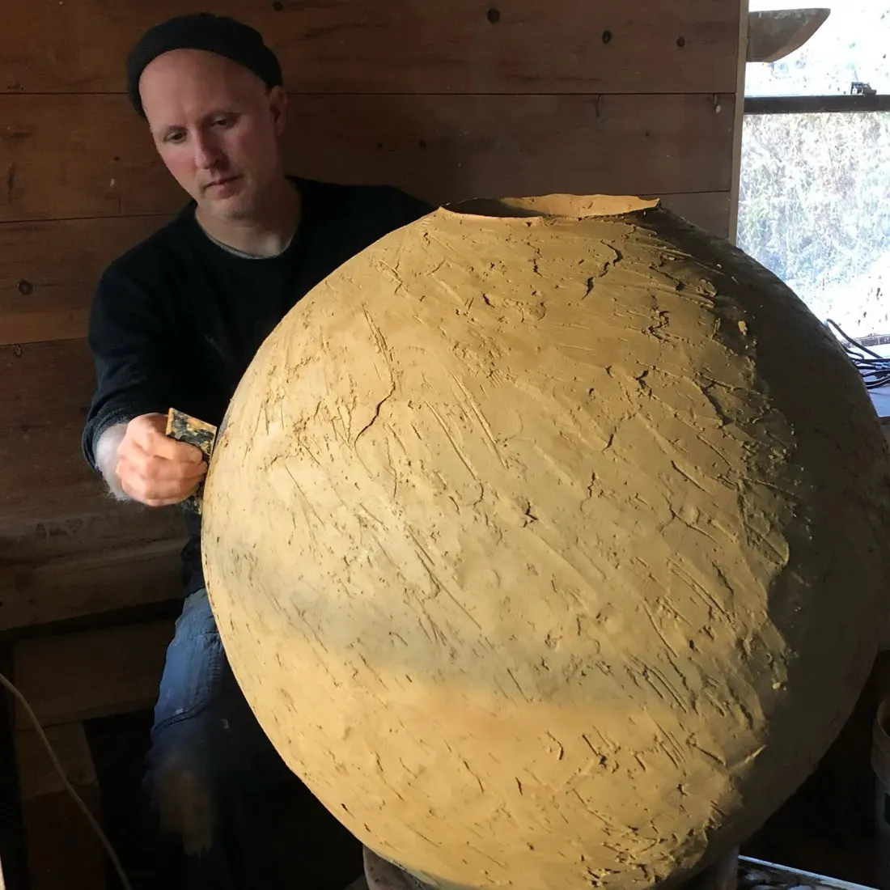
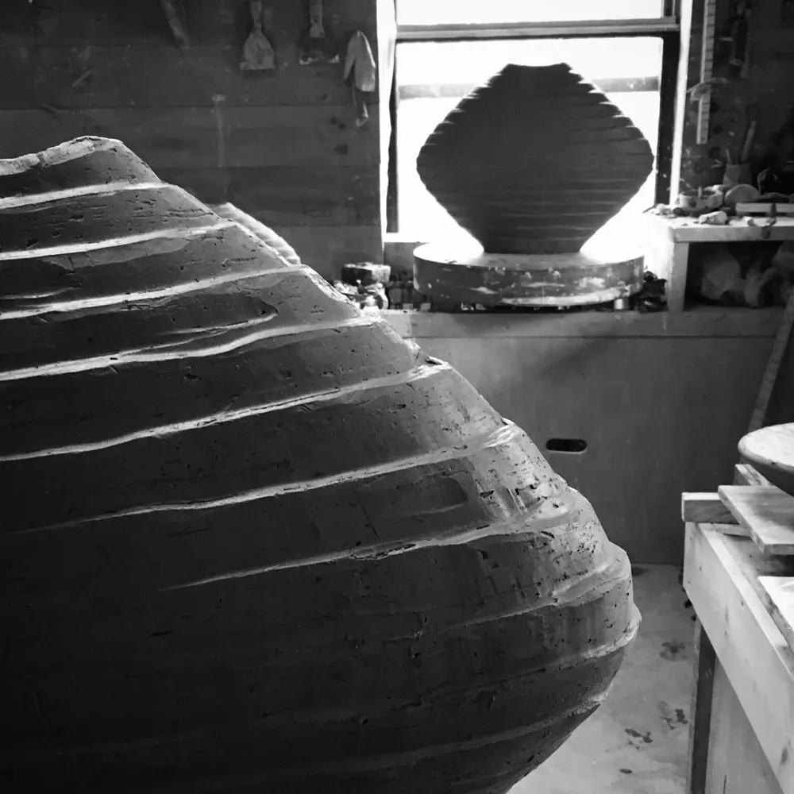
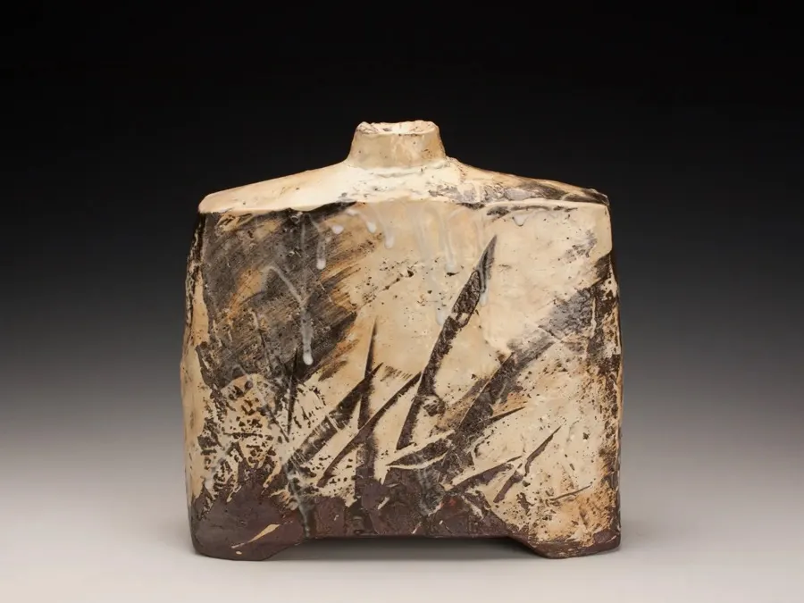
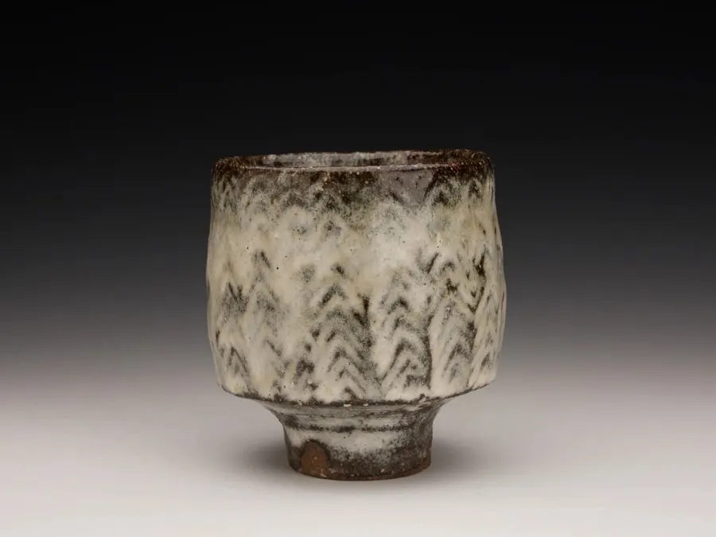
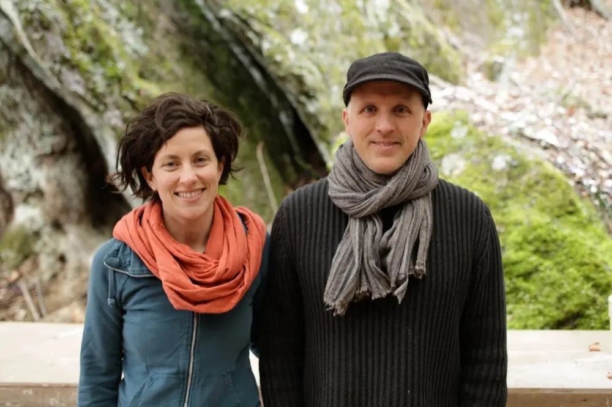
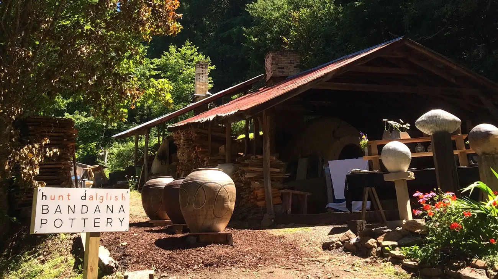

Our pots are the result of a collaboration between us, the coarse wild clay from our mountains, and the wood kiln.
The life of these pots begins with the geologic forces that formed the clay, passes through our hands and kiln, and continues through years of daily use in the home.

The clay
Mostly two clays from our area: a coarse red clay near our home in the higher mountains, and a more plastic grey clay that settled near a creek bed further down.

Our hands
We make and glaze the pottery together. Naomi makes the figurative sculptures, and Michael makes the large jars.

The kiln
A large wood kiln, stoked for about twenty hours until the glazes melt. Each firing is a little different.
Onggi
Onggi is a Korean pottery tradition of making large and small storage jars for everyday use. In the Cholla province, potters build their jars from long slabs of clay placed on edge, then stretch and shape them with a wooden paddle and anvil on a kick wheel set in a pit in the floor.
“The first time I saw an Onggi potter make a large jar I was mesmerized. I realized that I had to learn how to make pots like that.”Michael, who went to Korea to learn from master potter Oh Hyang Jong
Our jars have a softly expanding volume of paddled facets, sometimes with the texture of the wooden tool. Many could be used for fermenting, though many find their way to homes for other purposes.


Pots for daily use
Thrown on slow wheels, carved, or handbuilt, then slipped and glazed with wood ash, local feldspar and our own Bandana kaolin.



About us
Michael got hooked on clay in high school and became a student at Penland School of Craft. Naomi began making pottery with her grandmother as a child, and later studied with Mexican potters, where she discovered pre-Columbian clay figures.
We met at Penland when Naomi came to take a kiln-building class and Michael was building a kiln at his studio. Now we work together as full-time potters, firing the kiln four times a year and occasionally teaching workshops. The pottery is named after Bandana, the small community where we started our studio.

Call ahead and we'll meet you
1446 Conley Ridge Road
Bakersville, NC 28705
Generally open every day, 10am to 5pm